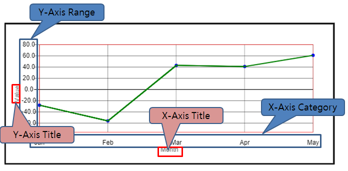

Overview
# 개요
Canvas Area : canvas 태그의 영역
Chart Area : 각 padding을 제외한 실질적으로 chart가 그려지는 영역
Data Point : 차트에 표시되는 하나의 값
Data Series : X-axis category에 대응되는 Data Point 영역

Y-Axis Range : y축 Range 영역
Y-Axis Title : y축 Title 영역
X-Axis Category : Data Series에 대한 카테고리 명
X-Axis Title : x축 Title 영역